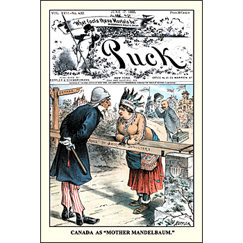

|
"Mother" Mandelbaum Also known as "Ms. Crime" or "Marm", Mandelbaum was the leader of a massive stolen-goods ring that fenced the riches from heists all over the east coast. Using a network of warehouses around the city, she was able to keep track of a massive empire of property, utilizing bribes and payoffs to the police to protect herself and her gang. For over 20 years (starting in 1862), Mandelbaum oversaw the transport of anywhere between $5 million and $10 million worth of stolen property. In the newspapers, she was called "the most successful fence in the history of New York".Before this, she ran a school for pickpockets and bank robbers, and some groups have lauded the work she did in "rescuing" children and poor women from other predators. This recent revisionism of Mother Mandelbaum as savior is, shall we say, stretching it a bit. Pinkerton detectives attached identifying marks to some items her gang stole, and the New York D.A. (no longer trusting the police of New York to bring her to justice) used this inescapable evidence to round up Ma at her home. Reports speak of drawers and closets filled with gems, watches, silverware, and piles of fine clothes throughout the house. She posted the $21,000 bail and skipped out of town to Canada with over $1 million in cash, where she lived out the rest of her life, loaded with money, thumbing her nose at the law back home (hence the issue of Puck portraying Canada as "Mother Mandelbaum") and dying ten years later at the age of 76. |